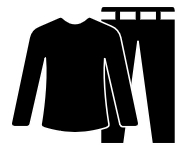
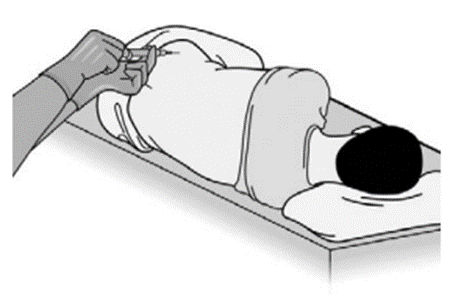

What is a bone marrow biopsy?
Bone marrow is the soft part inside your bone which makes your blood cells. In a bone marrow biopsy we take one or more samples including:
- Bone marrow aspirate – this is where we take a small sample of fluid from inside your hipbone (pelvis). These samples are then looked at under a microscope.
- Bone marrow trephine – this is where we take a small sample (core) of your bone marrow using a hollow needle. It can then be looked at under a microscope.
Why do I need this test?
You may need a bone marrow test because:
- We have found a problem with your blood which needs to be looked into. By looking closely at your bone marrow, we may be able to find out why there are changes in your blood. This can help us to make a diagnosis and start you on the right treatment.
- you are already receiving treatment for a blood disorder, so that we can see how the treatment is working.
What are the risks?
Bone marrow tests are low risk. You may have some bleeding in the area where the needle is put in. This usually stops when pressure is put on the site, but you can be left with a small bruise. You may develop an infection. This is rare and you can reduce the risk by keeping the area clean and dry after the test for 24 hours.
Are there any alternatives?
No. The only way to diagnose a problem in your blood is by looking at where it is made – in your bone marrow. A bone marrow test is required when either a diagnosis has not, or cannot, be made based on blood test results alone.
Your appointment checklist
 You can eat and drink normally before your appointment.
You can eat and drink normally before your appointment.- You can bring a friend, partner or family member with you to support you during the procedure.
-  Please wear loose fitting clothing so we can do the test easily.
- If you are taking warfarin, apixaban, edoxaban, rivaroxaban or any other medicines that thin your blood, such as heparin injections follow the bridging plan given to you in clinic.
- If you are taking aspirin or clopidogrel please follow the advice from your nurse or doctor.
- Taking these medications are not harmful but it may take a little longer for bleeding to stop and there may be more bruising.
 If you have any questions about your medications you can call us on [Phone Number - not provided in text].
If you have any questions about your medications you can call us on [Phone Number - not provided in text].
During your appointment
The procedure takes around 15 to 20 minutes.
You will need to lay on your side with your legs and knees tucked up into your chest. Please tell us if you find this difficult.
We will inject some local anaesthetic into the area above your buttock to numb the area.
We then use a needle to take a small piece of bone marrow from the hip. You may feel some pushing, pressure or sharp sensation.
Please tell the doctor or nurse at any time if you feel very uncomfortable.
After the procedure...
 Stay on the ward for 10-20 minutes after the procedure to make sure you feel well enough to go home
Stay on the ward for 10-20 minutes after the procedure to make sure you feel well enough to go home- You can take painkillers like paracetamol. You can use stronger painkillers if needed.
- Keep the dressing on for 24 hours and keep it clean and dry, to reduce the chance of infection
- Do not have a bath or shower for 24 hours after procedure
- Do not leave on a wet dressing
- Do not take anti-inflammatory/NSAID such as ibuprofen or aspirin for pain as it can worsen bleeding and bruising
What happens to the bone marrow sample and when do I get my results?
We send the bone marrow sample to a laboratory to be looked at under a microscope. A number of tests are done. Your results can take up to 4 weeks to come back. Your doctor will discuss them with you at your next clinic appointment. A doctor may contact you if it is urgent.
If you don't hear from us with your results after 5 weeks you can call the department numbers below.
Who can I contact with queries and concerns?
If you have any questions pleases discuss them with your doctor or nurse during your appointment.
Before or after your test, you may contact us using the following contact numbers but please note, these are available in normal working hours:
Haematology CNS
Departmental admin staff:
For an urgent out of hours concern please call NHS 111 or attend Accident and Emergency
More information
Macmillan Cancer Support Bone Marrow Test
https://www.macmillan.org.uk/cancer-information-and-support/diagnostic-tests/bone-marrow-biopsy
Cancer Research UK.
https://www.cancerresearchuk.org/about-cancer/tests-and-scans/bone-marrow-test